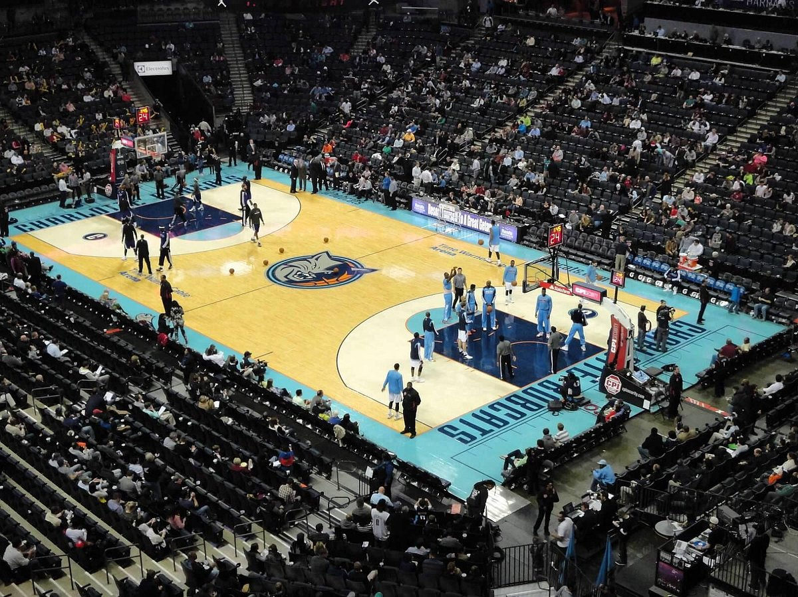

Charlotte Hornets - Fundado em 1988, o Charlotte Hornets é uma equipe da NBA situada em Charlotte, Carolina do Norte. A franquia teve uma trajetória movimentada, incluindo uma mudança para New Orleans em 2002. Em 2014, o time retornou a Charlotte como "Hornets" após um período como "Bobcats". A equipe ainda busca seu primeiro título da NBA e destacou jogadores icônicos como Larry Johnson, Alonzo Mourning e Kemba Walker.
Elenco - LaMelo Ball (#1), Terry Rozier (#3), Gordon Hayward (#20), P.J. Washington (#25), Mark Williams (#15), Brandon Miller (#24), Nick Richards (#4), Miles Bridges (#0).
Títulos NBA - 0
Títulos de Conferência - 0
Estádio - Spectrum Center - (19,000)
